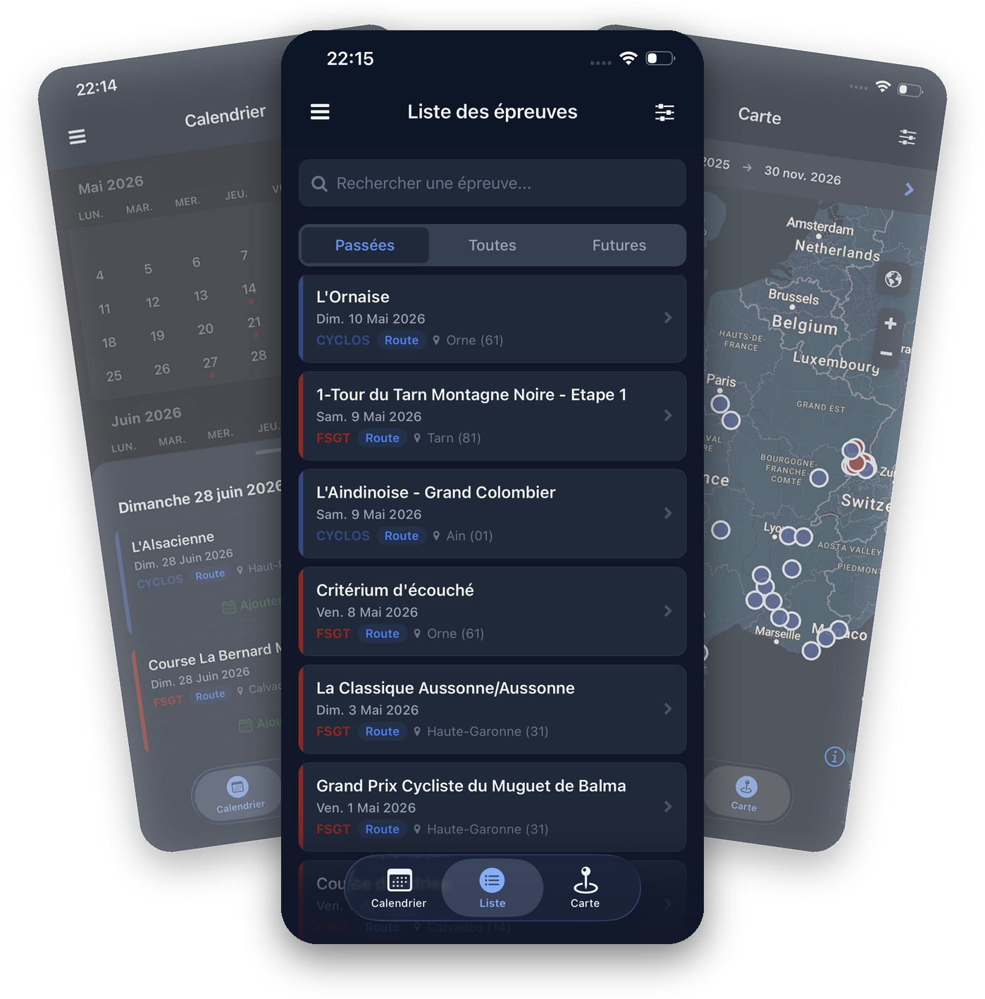
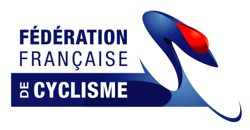
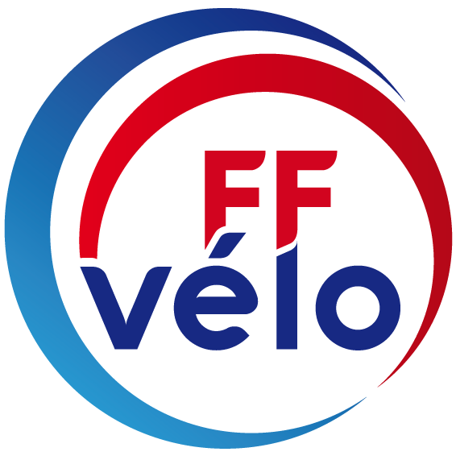
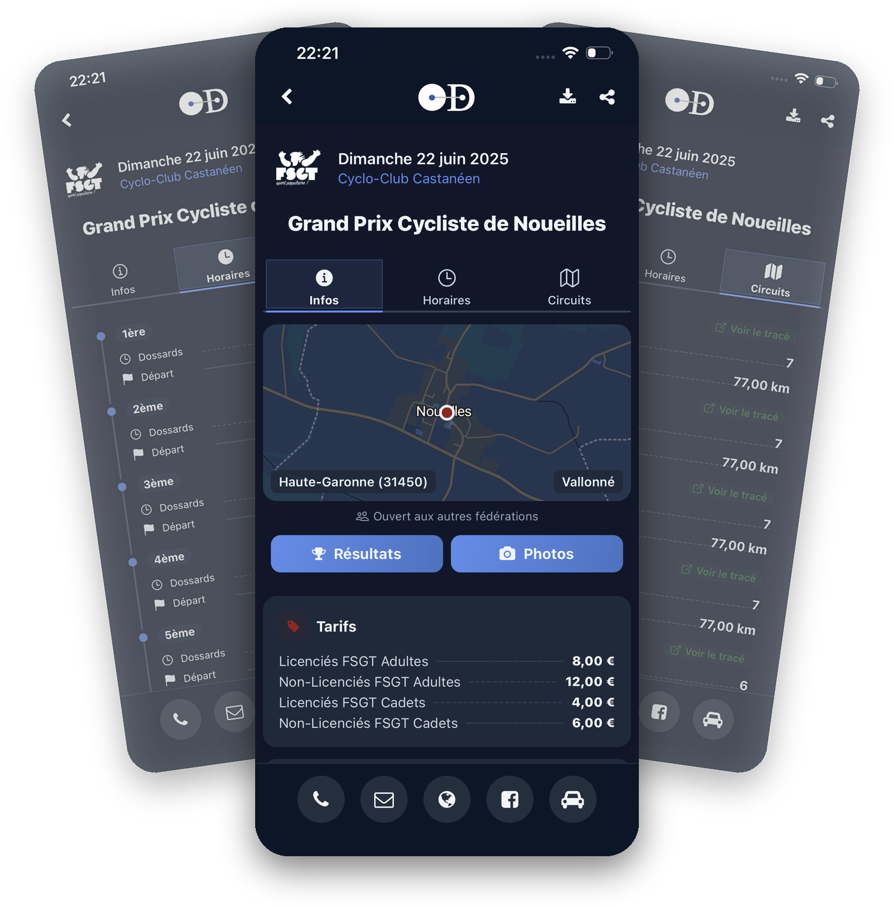
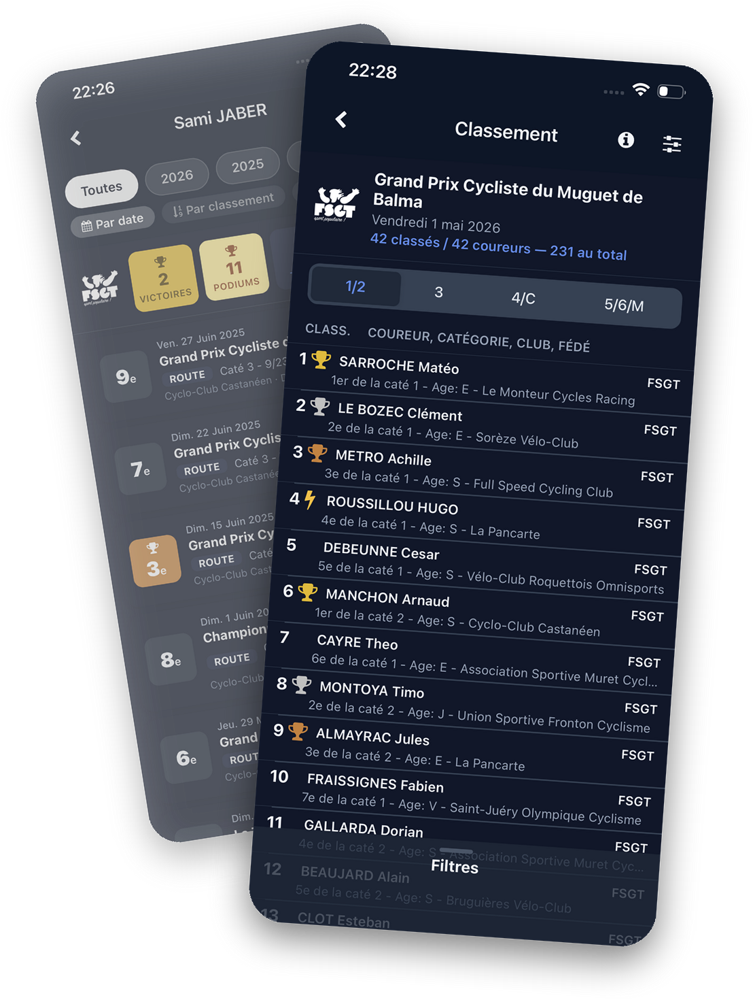
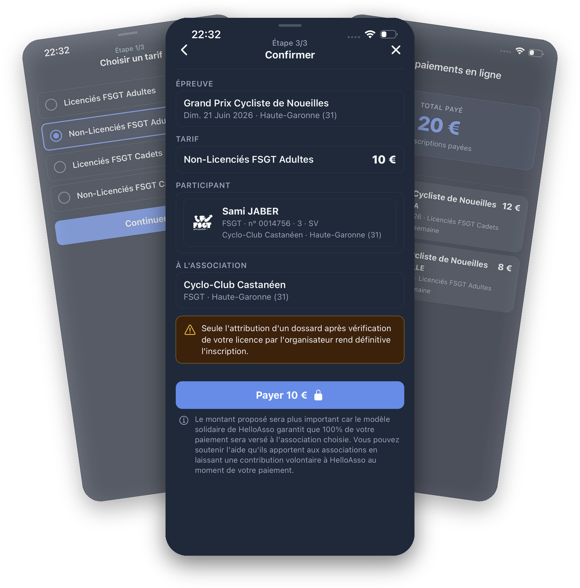
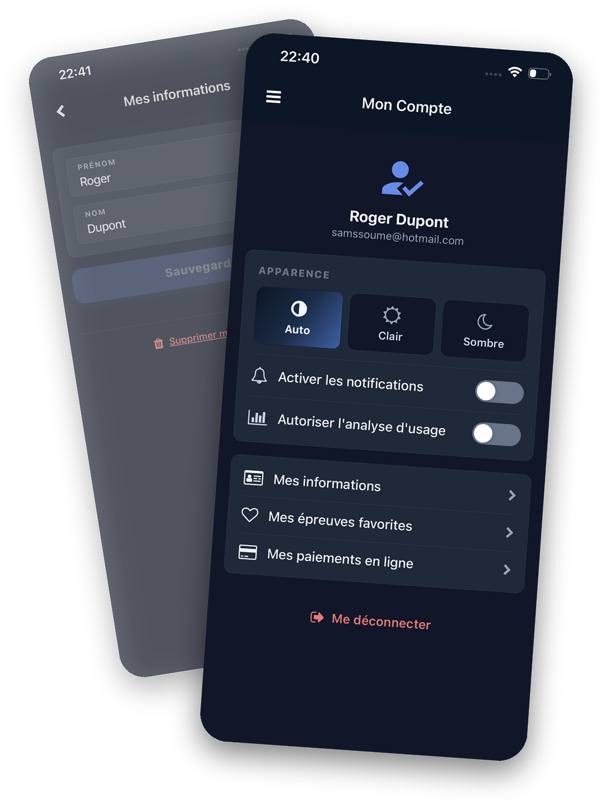

Calendrier
Toutes les épreuves dans un agenda, avec un code couleur par fédération. Un clic sur une date pour l'ajouter à votre agenda mobile.
Un calendrier complet des courses et cyclosportives, désormais avec inscription et paiement en ligne, classements et résultats. Sur iOS et Android.

Dossardeur est compatible avec toutes les fédérations


Quand, où, quoi : Dossardeur affiche toutes les épreuves sous l'angle qui vous arrange, et synchronise vos filtres entre les vues.
Toutes les épreuves dans un agenda, avec un code couleur par fédération. Un clic sur une date pour l'ajouter à votre agenda mobile.
Recherchez par mot-clé, triez les épreuves passées ou futures. Le filtre s'applique instantanément aux autres vues.
Toutes les épreuves géolocalisées. Lancez la navigation (Waze, Google Maps, Plans) vers le départ en un clic.

Infos, horaires, circuits et distances, profil, tarifs et coordonnées de l'organisateur : la fiche réunit l'essentiel sous une présentation unique.

Consultez le classement d'une épreuve par catégorie, club ou fédération, et retrouvez vos propres résultats course après course.
Plus besoin de chèque ni de file d'attente. Réglez votre inscription directement depuis l'app, en toute sécurité.

Un modèle solidaire et sans commission : à chaque inscription, une contribution volontaire peut vous être proposée. Voici concrètement comment ça fonctionne.
À chaque paiement, une contribution volontaire vous est proposée, sur le modèle du prix libre. Elle est totalement facultative et ajustable.
Ces contributions couvrent les coûts de HelloAsso, qui peut ainsi proposer ses outils de paiement aux associations sans frais.
Résultat : 100 % de votre inscription revient à l'association organisatrice, et l'outil reste gratuit pour tout le monde.
La contribution volontaire est destinée à HelloAsso, pas à Dossardeur ni à l'association : vous restez libre de l'ajuster ou de la retirer au moment du paiement.

Créez votre compte pour retrouver vos favoris, l'historique de vos paiements et vos préférences, où que vous soyez.
Ouvrez la fiche de l'épreuve, choisissez votre tarif, puis laissez-vous guider : l'inscription et le paiement se font directement dans l'app, en quelques secondes. Vous recevez une confirmation, et votre dossard est validé après vérification de votre licence par l'organisateur.
Oui. Les paiements sont traités par HelloAsso, plateforme de paiement dédiée aux associations. Dossardeur ne stocke jamais vos données bancaires, et 100 % du montant de l'inscription est reversé à l'association organisatrice.
Oui, l'application est gratuite au téléchargement et à l'usage. Seules les inscriptions payantes aux épreuves (réglées en ligne) donnent lieu à un paiement, au bénéfice de l'organisateur.
Dossardeur agrège les calendriers de plusieurs fédérations (FSGT, FFC, UFOLEP, FFVÉLO, FFTRI…) ainsi que les cyclosportives indépendantes, avec un code couleur par fédération. C'est l'un des calendriers cyclistes les plus complets du marché.
Dossardeur est disponible gratuitement sur iOS (App Store) et Android (Google Play).
Dossardeur est édité par la société DNG Consulting, à l'initiative de son développeur Sami Jaber. L'app s'appuie sur OpenDossard, la plateforme de gestion des épreuves cyclistes.